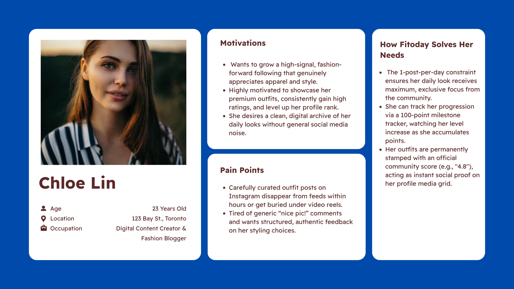
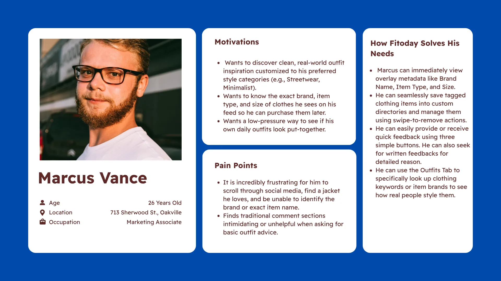
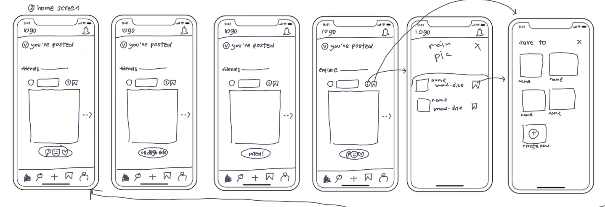
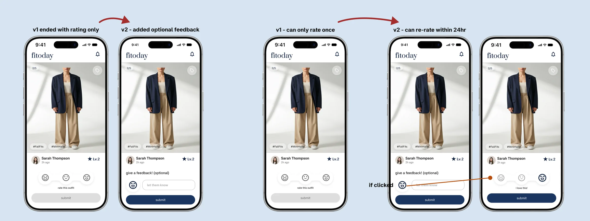
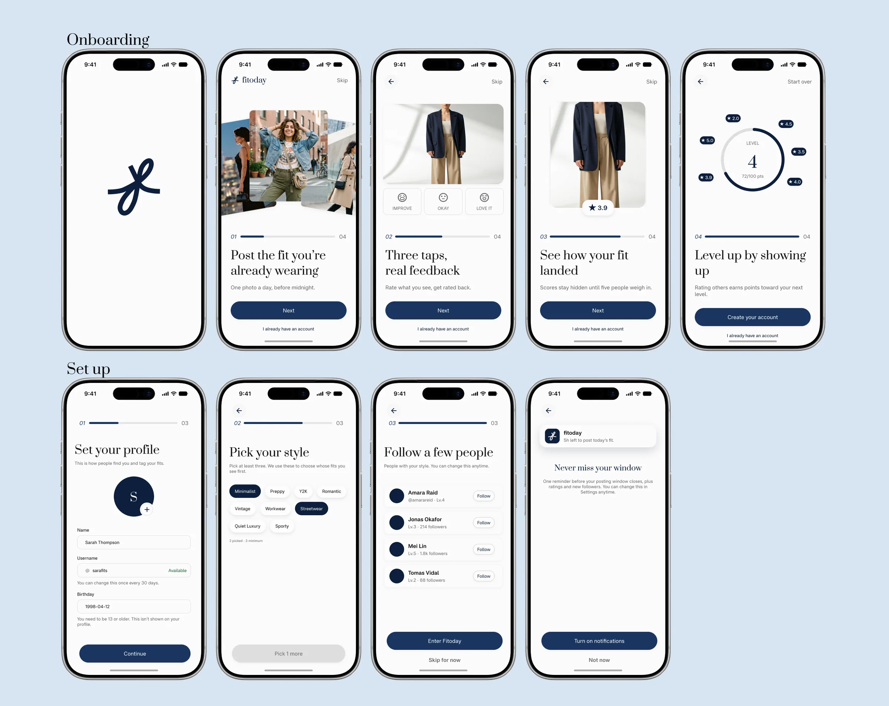
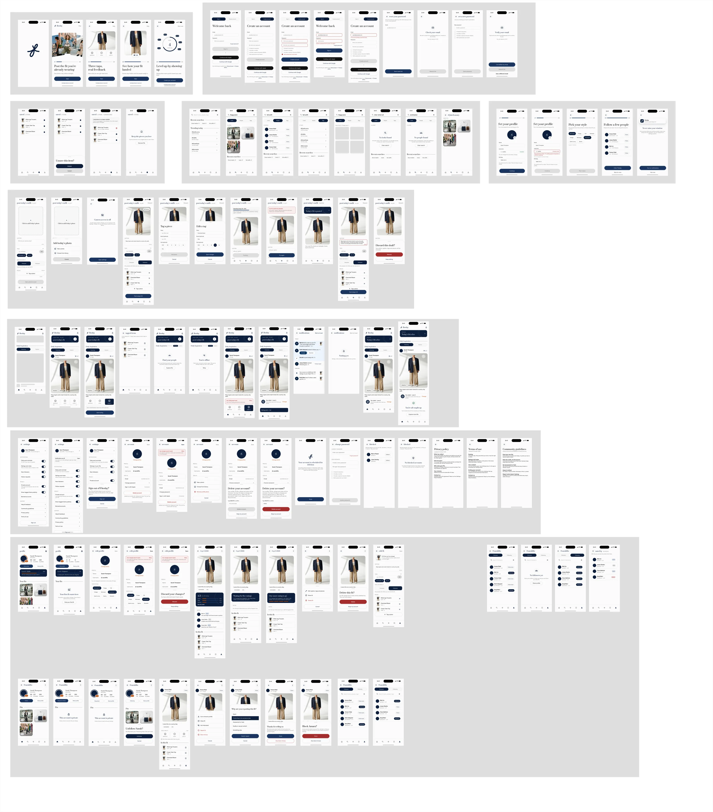
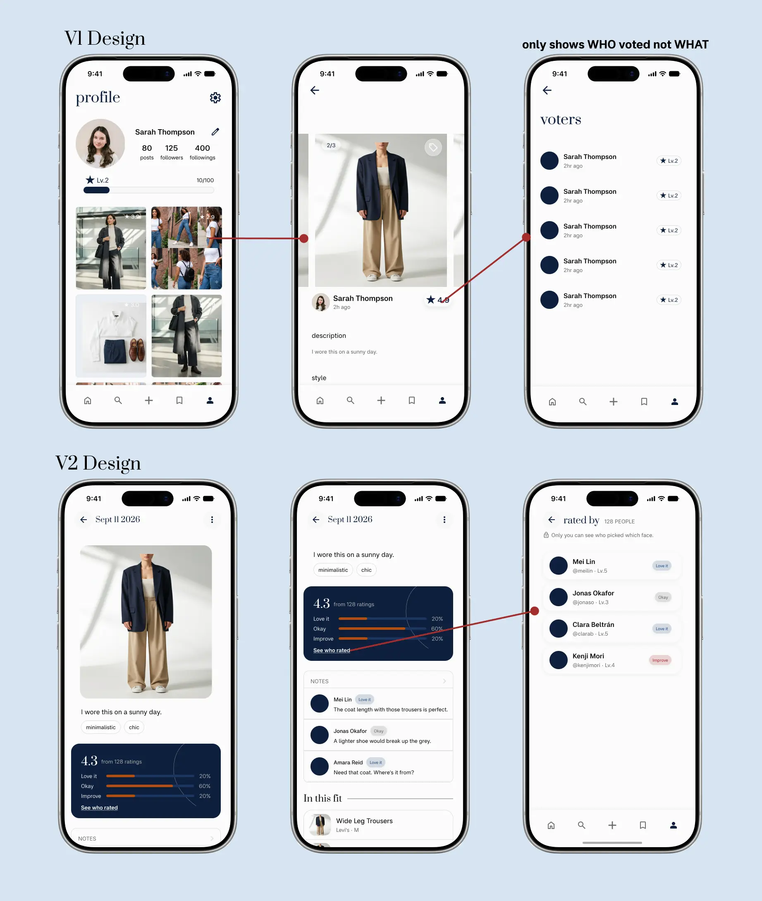
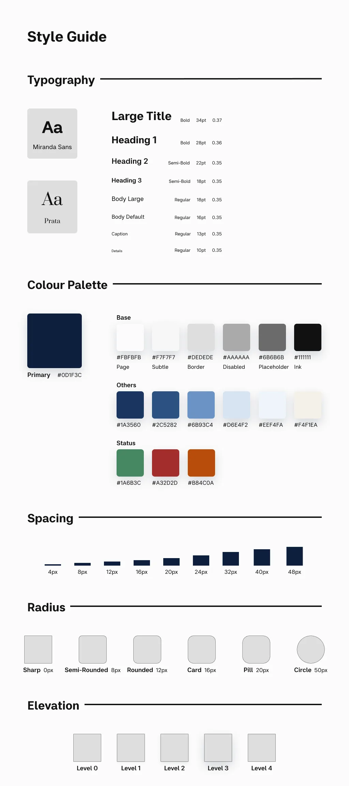

Fitoday
A social fashion app where you post today's outfit and get feedback you can learn from, not just likes. I took it from research and a PRD through testing, then redesigned it from one core interaction into a complete product.
- Role
- Solo: research, product, UI, build
- Timeline
- June 2026 – ongoing
- Platform
- iOS, built in Flutter
- Tools
- Figma, Claude Design, Flutter, Firebase
- Status
- Design complete, build in progress

Problem
Fashion apps are built for sharing outfits, not for improving them.
It started with a personal question. Scrolling Instagram, I kept wondering why some outfits looked put together and mine didn't. What I wanted wasn't more inspiration. It was honest feedback I could learn from.
To check whether that was just me, I ran a 12-person survey and reviewed the platforms people already use for fashion. The pattern was clear: there are plenty of places to post an outfit and almost nowhere built for constructive feedback on it. People also told me why they don't ask for it: they're afraid of being judged.
I am scared that people will judge me. I don't think my fashion sense is good enough.
Survey participantPinterest used to be a kind of safe place… now it's filled with AI generated content I can never seem to get rid of.
Pinterest app reviewAnother version of TikTok, depressing, clickbait, I wouldn't use it again.
Lemon8 app review
| Platform | Good at | Falls short for outfit feedback |
|---|---|---|
| Large audience | Fashion is buried under unrelated content and algorithmic noise | |
| Inspiration | No way to get feedback on your own outfit | |
| TikTok | Discovery, virality | Hard to track your own style over time |
| BeReal | Daily posting habit | Not about fashion at all |
None of the existing platforms are built around structured feedback.
Who it's for
Two people who want feedback: one confident, one hesitant.
Chloe already posts her outfits and wants feedback that's more useful than "nice pic". Marcus wants to dress better but finds asking for advice intimidating. The product has to work for both: quick enough for Chloe's followers to give real feedback, and safe enough that Marcus will post at all.


Requirements
A PRD turned the research into scope, so every design decision traces back to a goal.
Before opening Figma, I wrote a product requirements document. Its job was to say what Fitoday is for, what it will deliberately not do, and how I'd know it's working.
- GoalsA fashion-only community without general social media noise, a daily posting habit, and progress people can see over time.
- In the MVPOne post per day with style and item tags, a three-option rating, a daily score stamped on each post, levels every 100 points, search by people, outfits and tags, and private accounts.
- Left out on purposeComments, direct messages, video, in-app shopping and AI recommendations, to keep the focus on feedback.Testing later brought back a narrow version of comments: an optional note attached to a rating.
- How I'd measure itDaily to monthly active users above 40%, the share of users who post every day, and ratings given per active user.
V1: the core loop
Before designing the whole app, I tested the one interaction it depends on.
The riskiest assumption was simple: can people rate an outfit quickly and still say something useful? So V1 was only the feed and the rating. Three options instead of a like and one fit per person per day.

Testing
The rating worked. People also wanted to say why.
I ran think-aloud sessions with five participants and watched for where they hesitated or expected something different. Each finding below is paired with what I changed.
- Rating was instantly clearAll five understood the three-option rating with no explanation.Kept as is.
- A tap isn't enough"I want people to tell me where to improve, not just how good it looks."Added an optional note after rating.
- Ratings felt exposingOne participant didn't want their past ratings visible to anyone.Added privacy by only showing ratings to the user.
- No way to undoA participant mis-tapped submit and couldn't fix it.Ratings can be changed during the rating window.

V2: the full product
V1 proved the rating but I was not satisfied with the design and needed a V2 that gives people a reason to open the app every day.
To ship, Fitoday needed everything around that moment: a way in, a safe place to post, a reason to come back, and something to show for it over time. I redesigned the whole product and carried the tested decisions forward. (The changes found in V1 testing was still applied.)


Testing V2
The same five testers saw their feedback in the product, and one revealed a new need.
I tested V2 with the same five participants. That made it a check on whether my changes answered what they'd told me and they responded well to seeing their opinions reflected in the design.
A need I hadn't designed for
One participant wanted a trigger to help them use the app everyday.
They wanted a streak feature to maintain their daily usage and come back to the application everyday. This is the next feature I am thinking of and I am putting it into my wishlist for now.
Key decisions
Three rules carry the product. I reversed one of them.
- One post per dayEncourages thoughtful posts, keeps the feed calm, and creates a habit people can realistically keep. It serves the PRD goal of daily use.
- Three options, not likesLikes don't say how to improve. Three options keep rating fast, and the note carries the why.
- Feedback with a name on itNotes are tied to who wrote them, so feedback is accountable and the poster knows whose taste it reflects.
Where I changed my mind
V1 showed who rated a fit but hid how they rated it. Once notes became the main way to give feedback, that split stopped making sense.
A note already says what someone thinks, so hiding their rating next to it was inconsistent. I dropped the hidden-rating rule. The fear of judgement from the research still needed an answer, so I moved protection to the audience level: private accounts, blocking and reporting.

Visual system
One set of tokens, so about 100 screens feel like one app.
For V2 I rebuilt the visual system around tokens for colour, type and spacing: deep navy and white, a serif for headings, and a small set of components. It keeps onboarding, posting and settings consistent, and gives the Flutter build a single reference.

Build status
I'm building it myself, and designing every state first keeps decisions out of the code.
- DoneResearch, PRD, V1 testing, full V2 design, V2 testing, authentication and backend security rules.
- In progressCore Cloud Functions in Firebase.
Reflection
Most of the experience lives in the edges.
Writing the PRD first meant every decision traced back to a requirement, not a preference. The redesign tested that: I kept what research and testing had earned, like the daily limit and the three-option rating, and let go of the hidden-rating rule once notes made it unnecessary.